No revisadoNot reviewed
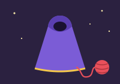
Tu búsqueda y tu capaYour quest and your cloak
Quests & cloaks
Todos llevamos dentro un hilo del que tiramos sin darnos cuenta. Una capa te deja seguirlo en privado sin que deje de ser real.We all carry a thread we keep tugging without noticing. A cloak lets you follow it in private without it being any less real.
Cómo se haceHow it works
- Busca el tema al que tu cabeza vuelve sola en las conversaciones: esa es tu búsqueda.
- No hace falta que sea útil; basta con que te importe.
- Si no quieres enseñarlo, póntele una capa: lo sigues por dentro y hacia fuera vives normal.
- Look for the topic your mind keeps drifting back to in conversation: that's your quest.
- It doesn't need to be useful. It only needs to matter to you.
- If you'd rather not show it, wear a cloak: follow it inside and carry on as usual outside.
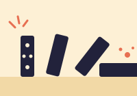
Si pasa esto, hago aquelloIf this happens, I do that
TAPs (Trigger-Action Patterns)
Los hábitos no se deciden: se enganchan a un gatillo. Elige bien el gatillo y la acción casi se hace sola.Habits aren't decided; they latch onto a trigger. Pick the right trigger and the action nearly does itself.
Cómo se haceHow it works
- Elige algo concreto que quieras cambiar.
- Busca un gatillo que se note: un sitio, un momento, una sensación.
- Escoge una acción pequeñísima y ensáyala diez veces en la imaginación.
- Ojo a los dos fallos típicos: no ver el gatillo, o verlo y no actuar.
- Pick one specific thing you want to change.
- Find a trigger you'll actually notice: a place, a moment, a feeling.
- Choose a tiny action and rehearse it ten times in your head.
- Watch for the two classic failures: missing the trigger, or spotting it and not acting.
La lupa del detectiveThe detective's magnifying glass
Noticing (TAPs para detectives taoístas)
Casi todo lo importante te pasa por delante sin que lo veas. Entrénate solo en darte cuenta, márcalo con un gesto, y ya llevas medio camino.Most of what matters walks right past you. Just train yourself to notice, mark it with a small gesture, and you're halfway there.
Cómo se haceHow it works
- No intentes cambiar nada todavía: solo nota.
- Cuando algo importante asome, haz un gesto pequeño (un toque, una palabra) para subirlo a la conciencia.
- Celebra el «¡me he dado cuenta!»: es lo que se entrena.
- Don't try to change anything yet. Only notice.
- When something important surfaces, make a tiny gesture (a tap, a word) to bring it into awareness.
- Celebrate the 'oh, I noticed!': that's the muscle you're training.
El simulador que llevas dentroThe simulator inside your head
Inner Simulator
Tu intuición ya ha ensayado el futuro miles de veces. Pregúntale qué pasa después antes de ponerte a calcular.Your gut has already rehearsed the future thousands of times. Ask it what happens next before you start calculating.
Cómo se haceHow it works
- ¿Qué viene ahora? Contesta con la tripa, sin pensar.
- Sorprendómetro: ¿cuánto te sorprendería que pasara?
- Prerretrospectiva: imagina que salió mal; ¿qué fue lo primero que falló?
- What comes next? Answer from the gut, no thinking.
- Surprise-o-meter: how surprised would you be if it happened?
- Pre-hindsight: imagine it went wrong. What broke first?

Murphyjitsu: el arte marcial contra la ley de MurphyMurphyjitsu: the martial art against Murphy's law
Murphyjitsu
Imagina que tu plan ya ha fracasado. Si no te sorprende, acabas de encontrar por dónde arreglarlo.Picture your plan having already failed. If that doesn't surprise you, you've just found where to fix it.
Cómo se haceHow it works
- Ten una meta y un plan.
- Imagina que ha fallado. ¿Te sorprendería? Si no, sigue.
- ¿Por qué ha fallado? Arregla eso en el plan.
- Vuelve a preguntar. Paras cuando el fracaso ya te sorprendería de verdad.
- Have a goal and a plan.
- Imagine it failed. Would you be surprised? If not, keep going.
- Why did it fail? Patch that in the plan.
- Ask again. Stop once failure would genuinely surprise you.
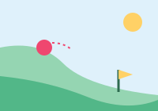
Cambia el paisaje, no al jugadorChange the landscape, not the player
Incentive landscapes
En vez de pelearte con tu fuerza de voluntad, inclina el terreno para que lo bueno ruede cuesta abajo.Instead of wrestling with your willpower, tilt the ground so the good stuff rolls downhill.
Cómo se haceHow it works
- No intentes recablearte el cerebro.
- Mira tu entorno real: qué está a mano, qué cuesta un paso de más.
- Mueve las cosas para que lo que quieres hacer sea lo fácil.
- Don't try to rewire your brain.
- Look at your real surroundings: what's within reach, what takes an extra step.
- Move things around so that what you want to do becomes the easy option.
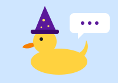
Protagonista y magoProtagonist and wizard
Pair debugging / Intentional conversations
Habla de lo tuyo sin intentar entretener a nadie, mientras otro te escucha como un pato socrático: los nudos se deshacen al decirlos en voz alta.Talk through your thing without trying to entertain anyone, while someone listens like a Socratic rubber duck. Knots loosen once you say them out loud.
Cómo se haceHow it works
- Protagonista: pide lo que necesitas y sé «egoísta»; puedes callarte minutos.
- Mago: escucha, pregunta poco y bien, ayuda sin llevarte la conversación.
- Sirve para cualquier tema en el que estés un poco atascado.
- Protagonist: ask for what you need and be 'selfish'. Silence for minutes is fine.
- Wizard: listen, ask few but good questions, help without taking over.
- Works for any topic where you feel a bit stuck.

Escuchar lo que el cuerpo ya sabeListening to what your body already knows
Focusing
Hay cosas que sabes y que todavía no tienen palabras. Pruébales un nombre y nota si encaja, como quien prueba llaves en una cerradura.Some of what you know hasn't found words yet. Try a name on it and feel whether it fits, like trying keys in a lock.
Cómo se haceHow it works
- Párate y respira; recorre el cuerpo.
- Busca esa sensación difusa sobre el tema: no la expliques todavía.
- Pruébale una palabra, una imagen o una canción.
- Comprueba si resuena. Cuando encaja, algo se suelta.
- Pause and breathe; scan through your body.
- Find the fuzzy feeling about the topic. Don't explain it yet.
- Try a word, an image or a song on it.
- Check whether it resonates. When it fits, something loosens.

Palabras que necesitan nacerWords waiting to be born
Word gaps
Si una idea te importa y no tiene palabra, invéntasela. Lo que tiene nombre se puede pensar, compartir y usar.If an idea matters to you and has no word, coin one. What has a name can be thought, shared and used.
Cómo se haceHow it works
- Apunta las palabras que usas más que los demás: dicen qué te importa.
- Busca las ideas que no tienen nombre y te hacen falta.
- Bautízalas y úsalas en frases hasta que se vuelvan herramientas.
- List the words you use more than other people do: they show what you care about.
- Look for ideas you need that have no name yet.
- Name them and use them in sentences until they become tools.
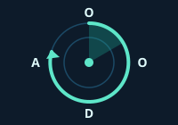
Observa, oriéntate, decide, actúa… y otra vezObserve, orient, decide, act… and again
OODA loops
Gana quien da la vuelta más rápido: cuando el mundo cambia, tu foto de ayer deja de ser verdad.Whoever loops fastest wins. When the world moves, yesterday's snapshot stops being true.
Cómo se haceHow it works
- Observa qué está pasando de verdad.
- Oriéntate: es el paso que más falla. ¿Qué significa lo que ves?
- Decide y actúa, y vuelve a observar enseguida.
- Cuando algo salga mal, pregúntate en qué paso del bucle se rompió.
- Observe what's actually going on.
- Orient: the step that fails most often. What does what you see mean?
- Decide, act, and go straight back to observing.
- When something goes wrong, ask which step of the loop broke.

Cinco minutos para resolverloFive minutes to solve it
Resolve cycles
Pon un temporizador de cinco minutos y trata el problema como si de verdad se pudiera resolver ya. Muchas veces se puede.Set a five-minute timer and treat the problem as if it could actually be solved right now. Surprisingly often, it can.
Cómo se haceHow it works
- Elige una meta concreta.
- Temporizador: cinco minutos.
- Intenta resolverla entera en ese rato, no planificarla.
- Si no da, haz otra vuelta para el plan: lo importante es el impulso.
- Pick a concrete goal.
- Timer: five minutes.
- Try to solve it outright in that time, not plan it.
- If it isn't enough, run another round for the plan. The point is momentum.
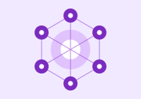
Aquí, juntos, ahoraHere, together, now
Circling
Una conversación sin tema en la que lo que se mira es lo que está pasando entre vosotros en este mismo momento.A conversation with no topic, where what you look at is whatever is happening between you right now.
Cómo se haceHow it works
- Sentaos en círculo, sin agenda.
- Di lo que notas ahora: en ti, en el otro, entre vosotros.
- Mejor curiosidad que opinión; mejor presente que anécdota.
- Sit in a circle with no agenda.
- Say what you notice right now: in you, in them, between you.
- Curiosity over opinion; the present over anecdotes.

Ponle un número a tu corazonadaPut a number on your hunch
Thinking in probabilities / calibration
Decir «un 30 %» en vez de «a lo mejor» te obliga a precisar, y después te deja comprobar cuánto acertabas.Saying '30%' instead of 'maybe' forces you to be precise, and later lets you check how often you were right.
Cómo se haceHow it works
- Ante una duda, di un porcentaje. Prueba varios y quédate con el que «suena» bien.
- Apúntalo.
- Cuando se sepa, mira si tus 70 % aciertan unas siete de cada diez veces.
- When unsure, say a percentage. Try a few and keep the one that feels right.
- Write it down.
- Once you know, check whether your 70%s come true about seven times in ten.
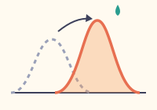
Creer un poco más, un poco menosBelieve a little more, a little less
Bayesian updating
Nadie empieza de cero: parte de lo que ya crees, mira la prueba nueva y mueve tu creencia justo lo que esa prueba merece.Nobody starts from scratch. Begin with what you already believe, look at the new evidence, and move exactly as far as it deserves.
Cómo se haceHow it works
- Antes: ¿cuánto lo creías?
- Prueba: ¿qué has visto, y cuánto más probable es si fuera verdad que si no?
- Después: ajusta. Ni ignorar la prueba ni darle la vuelta a todo.
- Before: how much did you believe it?
- Evidence: what did you see, and how much likelier is it if the idea is true than if it isn't?
- After: adjust. Neither ignore the evidence nor flip everything.
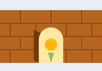
Deja siempre una salidaAlways leave a way out
Leave a line of retreat
Es más fácil mirar de frente una idea que te asusta si antes te imaginas que, aunque fuera verdad, el sol seguiría saliendo.It's easier to face a frightening idea once you've pictured that, even if it were true, the sun would still come up.
Cómo se haceHow it works
- Localiza el respingo: el sitio donde tu cabeza no piensa libre.
- Sé amable con lo mal que se siente.
- Imagina el peor caso: primero lo fácil (¿sale el sol?), después lo difícil.
- Si una parte de ti tiene que irse, dale las gracias y déjala marchar despacio.
- Find the flinch: the spot where your mind won't think freely.
- Be kind about how bad it feels.
- Picture the worst case: the easy parts first (does the sun rise?), then the hard ones.
- If part of you has to go, thank it and let it leave slowly.
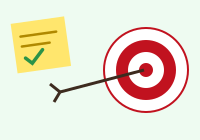
Hacer lo que decidiste hacerDoing what you meant to do
Executing intentions
Escribe en un papel qué ibas a hacer. Cuando dudes de si lo estás haciendo bien, el papel te lo recuerda.Write down what you set out to do. When you're unsure whether you're doing it right, the note will remind you.
Cómo se haceHow it works
- Ten una intención clara antes de empezar.
- Escríbela.
- Ejecútala; cuando te pierdas, relee el papel. Es sutil: casi nunca notas cuándo te desvías.
- Hold a clear intention before you start.
- Write it down.
- Carry it out; when you drift, reread the note. It's subtle: you rarely notice yourself drifting.
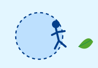
Ensanchar el mapaStretching the map
Comfort Zone Exploration (CoZE)
Hay mucha vida al otro lado de los muros que te dan miedo. Prueba un poquito, con cariño hacia ti, y el muro se mueve.There's a lot of life beyond the walls that scare you. Try a little, gently, and the wall moves.
Cómo se haceHow it works
- Encuentra algo que te dé un poco de miedo o de vergüenza.
- Pruébalo solo un poco, como quien prueba una hoja con la punta de la lengua.
- Sé amable contigo mientras lo haces. Luego, otro poco.
- Find something that scares or embarrasses you a bit.
- Try only a little of it, like touching a leaf with the tip of your tongue.
- Be kind to yourself while you do. Then try a little more.

¿Qué quieres de verdad?What do you actually want?
Goal factoring (y aversion factoring)
Descompón lo que persigues en lo que de verdad te da. A lo mejor hay otro camino que te lo da todo y sin lo malo.Break a goal down into what it really gives you. There may be another path that gets you all of it, minus the bad parts.
Cómo se haceHow it works
- Elige una acción: una que no te guste, una que dudes o una que te encante.
- Escribe lo bueno que te da, pieza a pieza.
- Comprueba: ¿resuena?, ¿es concreto?, ¿falta algo? Si una parte de ti siente pérdida, falta algo.
- Busca acciones nuevas que consigan esas piezas. Al revés también vale: descompón lo que no quieres.
- Pick an action: one you dislike, one you're unsure about, or one you love.
- Write down the good things it gives you, piece by piece.
- Check: does it resonate? Is it concrete? Is anything missing? If part of you feels a loss, something is.
- Brainstorm new actions that deliver those pieces. It also works the other way: factor what you don't want.
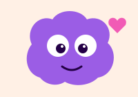
Mirar con los ojos de tu dificultadSeeing through your difficulty's eyes
Through difficulty's eyes
En vez de huir de lo que te cuesta o pelearte con ello, pregúntale qué quiere para ti. Casi siempre está de tu lado.Instead of running from what's hard or fighting it, ask what it wants for you. It's nearly always on your side.
Cómo se haceHow it works
- Escribe la dificultad.
- ¿Qué sientes hacia ella? ¿Recuerdas cuándo tenía sentido?
- Ponte en su sitio: ¿qué siente ella hacia ti?
- Pregúntale qué quiere para ti. Os ponéis del mismo lado.
- Write down the difficulty.
- How do you feel towards it? Can you remember when it made sense?
- Take its seat: how does it feel towards you?
- Ask what it wants for you. Now you're on the same side.
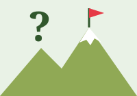
¿Cuál es el problema más importante de tu vida?What's the most important problem in your life?
Hamming questions
Y si no estás trabajando en él, ¿por qué no? Una pregunta incómoda que reordena todo lo demás.And if you're not working on it, why not? An uncomfortable question that rearranges everything else.
Cómo se haceHow it works
- Pregúntate cuál es el problema más importante de tu vida (o de tu campo).
- Pregúntate por qué no estás trabajando en él.
- Elige un paso pequeño que puedas dar esta semana.
- Ask what the most important problem in your life (or your field) is.
- Ask why you aren't working on it.
- Pick one small step you can take this week.
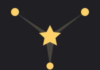
Tu problema en el centroYour problem at the centre
Hamming circles
Un rato largo con unos pocos amigos dedicados solo a tu problema más grande: tú decides adónde ir, ellos te ayudan a ver.A long stretch with a few friends devoted only to your biggest problem. You choose where to go; they help you see.
Cómo se haceHow it works
- Grupo pequeño, tiempo largo, una persona protagonista.
- Protagonista: tú llevas el timón, sé egoísta, empieza por el medio.
- Los demás preguntan y escuchan; nadie resuelve por ti.
- Small group, plenty of time, one protagonist.
- Protagonist: you steer, be selfish, start in the middle.
- The others ask and listen. Nobody solves it for you.

¿Qué te haría cambiar de opinión?What would change your mind?
Cruxes vs causes
Por qué llegaste a creer algo y qué te haría dejar de creerlo son preguntas distintas. La segunda señala los pilares de los que depende de verdad.Why you came to believe something and what would make you stop are different questions. The second points to the pillars it really stands on.
Cómo se haceHow it works
- Escoge una creencia tuya.
- Pregúntate: si esto dejara de ser cierto, ¿seguiría creyéndola? Esos son los pilares (cruces).
- No confundas los pilares con la historia de cómo llegaste a ella (causas).
- Pick one of your beliefs.
- Ask: if this stopped being true, would I still believe it? Those are the pillars (cruxes).
- Don't mix up the pillars with the story of how you got there (causes).

Lo que viste y lo que dedujisteWhat you saw vs what you concluded
Observation vs inference
Dos personas pueden ver exactamente lo mismo y concluir cosas opuestas. Separa lo que observaste de la historia que le pusiste encima.Two people can see exactly the same thing and conclude opposite things. Keep what you observed apart from the story you laid on top.
Cómo se haceHow it works
- Di solo lo que ves: «este lado de la casa es amarillo».
- Después, aparte, lo que deduces: «la casa es amarilla».
- Cuando discutas, empieza por comprobar si compartís las observaciones.
- Say only what you see: 'this side of the house is yellow'.
- Then, separately, what you infer: 'the house is yellow'.
- When you disagree, start by checking whether you share the observations.

La luz de la habitaciónThe light in the room
Awareness & embodiment
La atención es un foco; la conciencia es la luz de toda la habitación. A lo que se queda fuera de ella no puedes ni responder.Attention is a spotlight; awareness is the light for the whole room. Whatever falls outside it, you can't even respond to.
Cómo se haceHow it works
- Abre la mirada: nota el cuerpo, el cuarto, los sonidos, a la vez.
- Fíjate en cuándo te mete el túnel (algo de ayer, algo que tienes que hacer).
- Vuelve al presente, sin forzar.
- Widen your gaze: notice your body, the room, the sounds, all at once.
- Notice when tunnel vision pulls you in (something from yesterday, something still to do).
- Come back to the present, without forcing it.
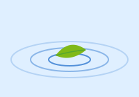
Pon la intención y sueltaSet the intention, then let go
Non-doing
Fija la intención, nota las ganas de meter mano, declínalas y espera. Muchas cosas salen mejor cuando dejas de empujarlas.Set the intention, notice the urge to meddle, decline it and wait. Plenty of things go better once you stop pushing them.
Cómo se haceHow it works
- Pon una intención.
- Llegarán las ganas de intervenir: nótalas.
- Declínalas y haz una pausa. Repite.
- Aunque haya dolor, está el dolor y está todo lo demás.
- Set an intention.
- The urge to step in will come: notice it.
- Decline it and pause. Repeat.
- Even when there's pain, there's the pain and there's everything else too.
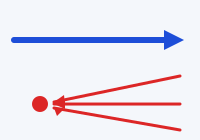
Pensar hacia delanteThinking forwards
«Forwardy» vs «backwardy»
Razonar desde los hechos hacia la conclusión es pensar; partir de la conclusión que quieres y buscarle razones es justificarse.Reasoning from the facts towards a conclusion is thinking. Starting from the conclusion you want and hunting for reasons is rationalising.
Cómo se haceHow it works
- Antes de decidir, pregúntate en qué dirección vas: ¿de las razones a la conclusión, o al revés?
- Si ya tienes la meta clavada, vigila que no se coma tu curiosidad.
- Lema del taller: no te quedes atascado, y sé amable.
- Before deciding, check your direction: from reasons to conclusion, or the other way round?
- If the goal is already nailed down, watch that it doesn't eat your curiosity.
- The workshop's motto: don't get stuck, and be kind.
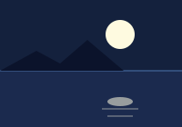
Mirar sin engancharteWatching without getting hooked
Remaining uninvolved (shi-ne)
Deja que los pensamientos pasen como coches por una calle; tú miras desde la acera.Let thoughts pass like cars down a street while you watch from the pavement.
Cómo se haceHow it works
- Siéntate en calma.
- Cuando llegue un pensamiento, no lo sigas ni lo eches: déjalo pasar.
- Vuelve a la quietud de fondo, que siempre estaba ahí.
- Sit calmly.
- When a thought arrives, don't chase it or push it away: let it pass.
- Come back to the stillness underneath, which was there all along.